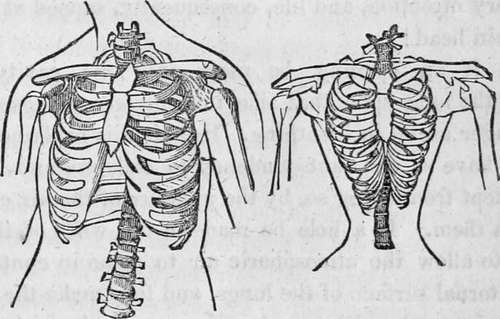

Respiration. Part 3
Description
This section is from the book "Human Physiology For The Use Of Elementary Schools", by Charles Alfred Lee. Also available from Amazon: Human Physiology, for the Use of Elementary Schools.
Respiration. Part 3
14. Thus we see that the lungs and all their complicated machinery of bones, ligaments, muscles and cartilages, were formed for the sake of these little air cells ; for it is through their agency that the blood undergoes the necessary changes and alterations. When we reflect upon the relative extent of the actual respiratory surface, compared with the dimensions of the lungs themselves, that a stratum of blood several hundred feet in surface, is exposed to a stratum of air still more extensive, and all compressed within the compass of a few inches, we are filled with admiration and astonishment at the wisdom displayed in such a structure, and search in vain, among all the contrivances of human skill and genius, for a counterpart !
15. We are now prepared to trace the successive acts of respiration, accomplished through the agency of the mechanism just described. About one second and a half after expiration, the muscles of inspiration begin to act, the inter--costals contract, and, by elevating the ribs, increase the distance between the spine and sternum, As the ribs rise, the diaphragm descends, and thus the cavity of the chest is enlarged in every direction. This expansion, like that of a bellows, causes a vacuum, and as the lungs are passive, the air consequently rushes in through the mouth and nostrils to fill it, and this influx of air continues until the density of the internal, is equal to that of the external air, when the act of inspiration is at an end. Again, the intercostal muscles relax, and the ribs, by their elasticity, are restored to their natural position, while, at the same moment, the diaphragm relaxes, and allows the abdominal muscles to contract and thrust it up into the chest. Thus the lungs being pressed upon in every direction, below by the diaphragm, before by the sternum and ribs, and behind by the spine and ribs, the air within them is pressed out Such is the beautiful and complicated mechanism of respiration. .
The cut upon the left represents the natural shape of the chest, and "that upon the right, the contracted state of it, owing to tight lacing.
16. Now we can easily understand how tight lacing alters the shape and diminishes the capacity of the chest. By looking at the cut, we see that the figure of the chest is that of an irregular cone, with a convex projection on each side, and flattened before and behind. By compressing it, however, by corsets, it is changed into a cylinder, its lower part being forced in, so that its transverse diameter is diminished nearly, or quite, one half. Now, in this state of things, it is very clear that the ribs cannot be raised upwards and outwards, as they are in natural and free respiration, and, consequently, the capacity of the chest cannot be enlarged in these directions. How, then, is life supported ? Clearly by the play of the diaphragm alone, which, by its descent, enlarges the cavity of the chest in its long diameter. But even the action of this muscle is cramped by this unnatural practice ; for, as the compressing apparatus extends down over the loins behind, and in front over all the soft parts, or the organs below the chest, it acts like a solid wall, preventing, by its resistance, the protrusion of these organs, and thus restrains the diaphragm above, in its attempt to descend ; so that in fact, the beautiful mechanism, contrived by a Supreme architect, for performing a function indispensable to life, health, beauty and enjoyment, is confined, in every direction, and life, consequently, sapped at its very fountain head!
17. If an opening be made into the cavity of the chest, the lung upon that side immediately eollapses, and is no longer useful in breathing. How is this explained ? The lungs have a constant tendency to collapse, and they are only kept from doing so, by the pressure of the air contained within them. If a hole be made in the walls of. the chest, so as to allow the atmospheric air to come in contact with the external surface of the lungs, and thus make the pressure on the external and internal surface equal, they immediately collapse and shrink to that size which is natural to them, and which they assume when removed from the chest. This operation, of opening the cavity of the chest, has been proposed as a remedy for consumption ; as the lung in a state of rest would be more likely to heal than when in constant motion.
18. The atmosphere is an invisible elastic fluid, surrounding the earth to the height of about forty miles. Water is seven hundred times heavier than air; and yet a column of air a foot in diameter, and extending to the top of the atmosphere, would be equal in weight to a column of water of the same diameter thirty two feet high, or to a column of mercury twenty eight inches high. The pressure of the atmosphere then, upon the body of a common sized man, is equal to between thirty and forty thousand pounds. Atmospheric air is composed of oxygen, azote and carbonic acid, in the proportion of 20 parts of oxygen, 78 of azote, and 2 of carbonic acid.
19. Oxygen is an invisible air, or gas, and enters into the composition of air, water, and all animal and vegetable substances. It is the supporter of combustion, and no animal can live without it. What are called acids and oxyds in chemistry, are oxygen combined with other substances, as sulphur, salt, nitre, etc. Azote can neither support combustion nor respiration, at least in man; though it is an element in all animal matter, and in some vegetables. In these cases it is obtained, both from food and the air.
20. It is now fully ascertained, that while the chemical composition of the blood is essentially changed, its weight always remains the same ; as the carbon discharged is precisely equal to the united weight of the oxygen and azote absorbed, and the same change is effected by the respiration of all animall, whatever be their rank in the scale of organization. It is worthy of remark, that plants and animals produce directly opposite changes in the chemical constitution of the air. The carbonic acid given off by animals is composed of oxygen and carbon ; this is decomposed by vegetables, which absorb the carbon and give off the oxygen to the air, which in its turn is absorbed by animals, and carbonic acid given off: so these two great departments of organized structure furnish food for each other, renovating the air, and preserving it in a state of constant purity. The immense quantity of oxyen given off by vegetables, may be inferred from the following experiment. About fifty leaves were enclosed in a jar of air ; the surface of the whole being about 300 square inches ; by adding some carbonic acid to the jar, in a short time 26 cubic inches of oxygen were evolved.. What then must be the amount given off by an entire tree, especially in cities, where carbonic acid abounds ; hence how important it is that cities should be thickly planted with trees, not only for the sake of ornament, but much more for that of utility.
Continue to:
Tags
humans, anatomy, skeleton, bones, physiology, organs, nerves, brain